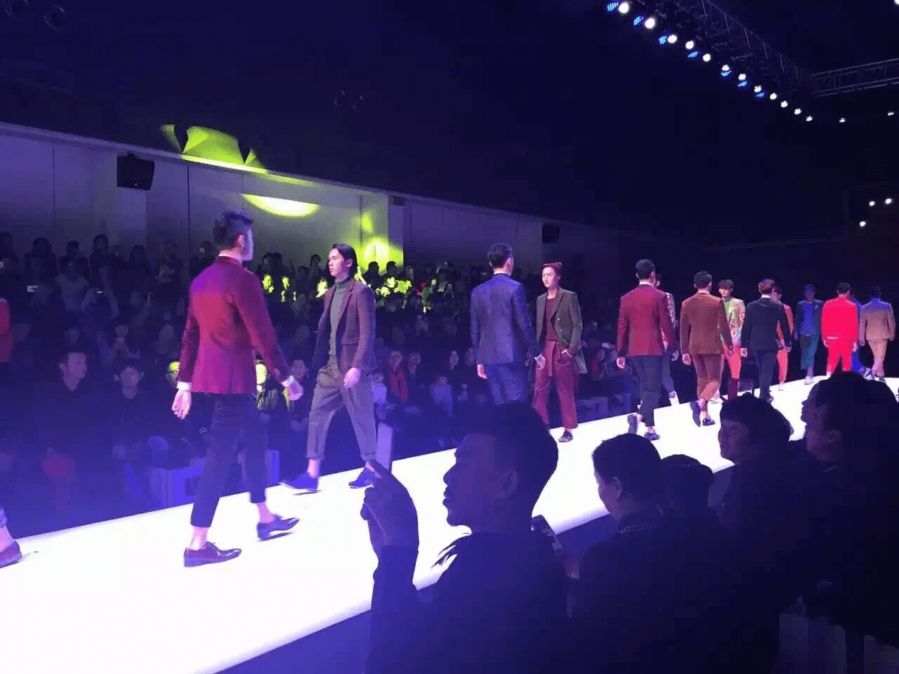

厦门鼓浪屿风琴博物馆
设计师：邬浩发表时间：2017-8-21 15：30
那么就设计师和人而言什么是最重要的了？再就是整个社会和人的相对意识形态更重要， 还是人性化更重要？这是两种不同的答案。现代设计师的面前有一个键盘，上面有美感的， 人机的，生产过程的......设计师如何调动这些元素来为自己的设计服务；设计师对于产品的 认识理解以及目的，这就是设计理念。
据统计，裙装最受职业女性青睐，大方简洁的西服套装更是首选。将不同衣饰搭配成套装则比较考验个人品味， 如颜色素净的职业套装里陪浊色衬衫使人显得暗淡，而配穿明亮的紧身衫或高领衣就能给人极佳的视觉效果。
